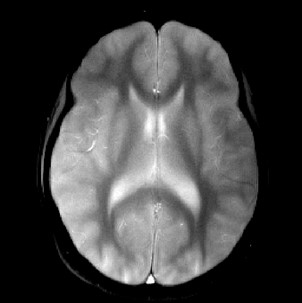
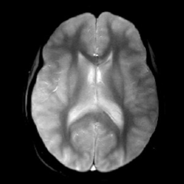

ORIGINAL -----------------------I---------------------- IMPROVED
Move the blue slider!
FLASH in transient state
ORIGINAL -----------------------I---------------------- IMPROVED


Our secret?
Not AI, but optimized MR acquisition.
We fine-tune flip angle trains end-to-end for better point spread function and artifact-free results.